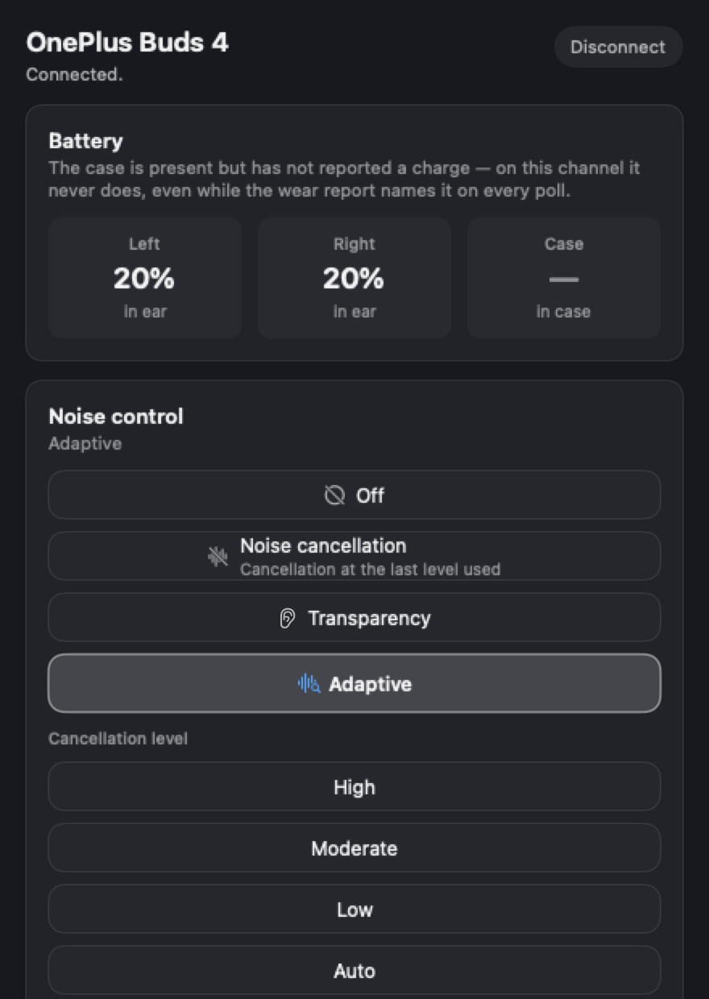

Control OnePlus Buds from your Mac
OnePlus ships a phone app for these earbuds and nothing for the Mac, where they are a Bluetooth audio device with one merged battery figure and no settings at all. BudsDesk is the missing desktop app — and it is exact about which OnePlus models it can drive today, because only one of them has been recorded.
Free, MIT licensed. macOS 26 or later on Apple silicon. Not on the Mac App Store. Latest release v0.1.2 — what changed.

Two answers, and only one of them is yes
| OnePlus model | State | What that means |
|---|---|---|
| OnePlus Buds 4 | Measured | Noise control, equalizer, BassWave and touch gestures all write. Battery per bud, wear, codec, firmware string and the multi-connect list read. Every setting, in detail. |
| Any other OnePlus model that advertises the vendor's control service | Read-only | Connects, names itself and shows everything it reports. Every control is drawn disabled with the reason on it, rather than hidden or, worse, left switchable. |
| A OnePlus earbud that does not advertise the service | No connection | Nothing is sent. The service UUID is the gate: an earbud that does not publish it is not a BudsDesk device, and the app says it found nothing rather than guessing. |
The line between the two rows is a recording, not a preference. A model is writable here when a capture of that model exists in the repository. There is no other path to a write, and no setting is written because it is probably supported — only because it has been seen to be.
What the measured model does
The OnePlus Buds 4 is the one model measured against hardware, so it carries the full surface. In the app that means:
- Noise control — Off, Noise Cancellation at High, Moderate, Low or Auto, Transparency and Adaptive, the same set the phone app offers.
- Equalizer — preset switching, including the earbuds' own custom slot when one has been saved from the phone.
- BassWave — over the range the earbuds report, not one assumed by the app.
- Touch gestures — double tap, triple tap, touch and hold and slide, limited to the actions this hardware has been seen to store.
- Battery, wear, codec, firmware string and multi-connect — read and shown as reported, left and right never averaged, with the case's charge stated as unreported because on this channel it never arrives.
The OnePlus Buds 4 page goes through each of those, including the two things that do not work and why.
What the rest of the line does instead
A OnePlus model nobody has recorded is not turned away. It connects, it answers, and it is read: the window fills with whatever the earbuds report, and the controls are drawn disabled with the reason printed on the card — this model has no measured write path for noise control, so the reported mode is shown and cannot be changed here. The window's footer says the same thing in one line: Verified write paths: none.
That sentence looks like an apology and is not one. An app whose buttons do nothing teaches you to distrust all of them, and this one exists because the alternative — an app that claims a setting it cannot confirm — is worse than a shorter menu.
How a OnePlus model becomes fully supported
Somebody records it. Turn tracing on, change one setting at a time while the traffic is written
out as hex, and commit the recording with its provenance: model, firmware string, date, tool and
channel. Then add one JSON file to devices/ describing what that recording shows,
with each capability marked measured, inferred or unconfirmed and citing its evidence. No
compiler change is involved, and it takes about twenty minutes.
The supported-models page has the whole recipe, the rules the registry enforces, and what counts as evidence for each of the three levels.
Questions
- Which OnePlus Buds models can BudsDesk control from a Mac today?
- One: the OnePlus Buds 4, which is measured end to end — noise control, equalizer, BassWave and touch gestures write to it, and battery, wear, codec, firmware string and multi-connect are read. Any other OnePlus model that advertises the same control service connects and shows what it reports, but no control is enabled, because nothing about writing to that model has been recorded.
- My OnePlus Buds connect but the controls are disabled. Is that a bug?
- It is the design. An unrecorded model is offered read-only on purpose: the earbuds report their state, and every control the app cannot back with a recording is drawn disabled with the reason written on it. The window's footer says the same thing in one line — "Verified write paths: none". An enabled button that silently does nothing is the failure this app is arranged to avoid.
- Do changes I make on the Mac show up in the OnePlus phone app?
- Yes, for anything BudsDesk actually writes. Those settings live on the earbuds rather than in either app, so the phone app reads the same state on its next refresh, and a change made in the phone app appears here on the next poll. Nothing is stored on the Mac and nothing is synced through a server.
- Is there an official OnePlus app for the Mac?
- No vendor ships a desktop app for these earbuds. BudsDesk is an independent, open-source project and is not affiliated with OnePlus; the product names on this page are device names, nothing more.
The other two brands
These earbuds share one vendor control channel, so the same rules apply to OPPO Enco and realme Buds — connect and read today, writable once recorded.